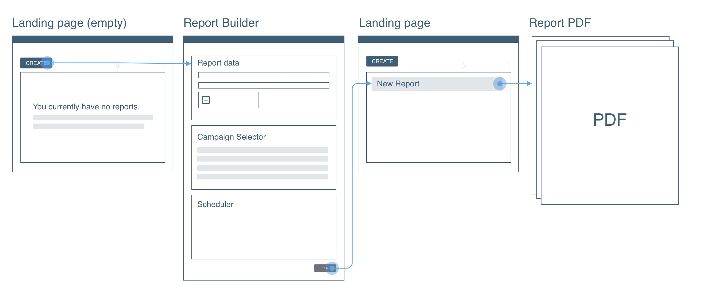
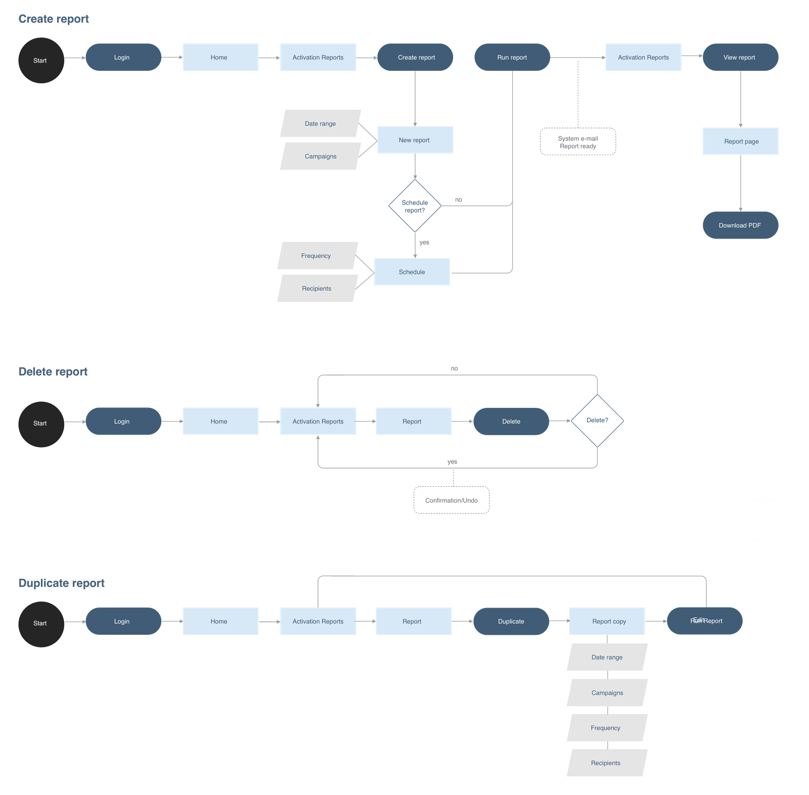
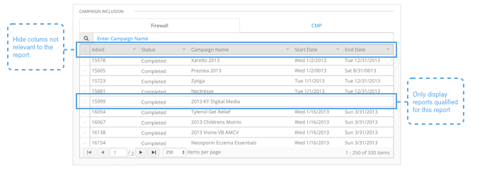
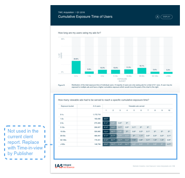
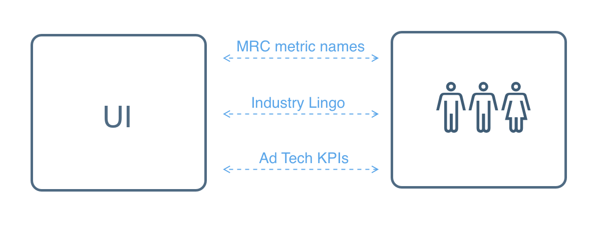
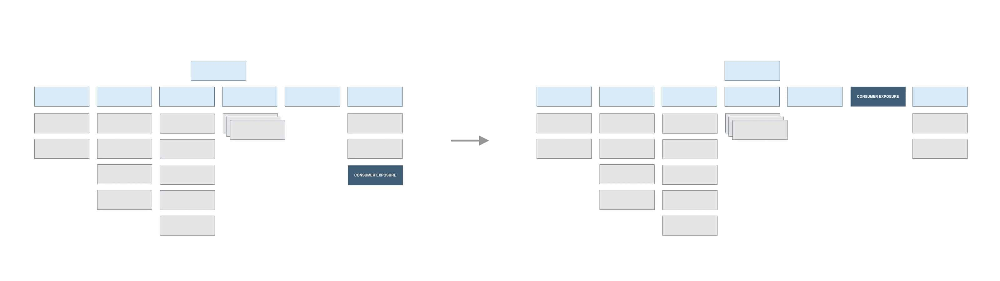

Advertisers face challenges in ensuring that consumers are exposed to online ad campaigns for a long enough time to create real impact. IAS had an alpha version of Consumer Exposure reporting for several years, however most of the reports were still created manually. In 2017 I worked on improving existing UI to make it user friendly, before opening it up to a larger audience.
Consumer Exposure reports are generated in a PDF format. In order to create a PDF user needs to fill out and a submit a form with an ad campaign details.
For this project it was particularly important to understand, how current report is generated and what kind of data goes into reports. I've reviewed existing documentation and asked data scientists and data engineers to go over the details with me. Conversations were focused around following questions:
I interviewed members of Customer success team (the main users of the report) asking to walk me through the existing process and their pain points. Here is what I've learned:
Based on Customer Success team interviews I've proposed new flows for the most important tasks: "Create report", "Edit/Duplicate Report" and "Delete Report".
Using HCI design principles as a guidelines, I gave existing UI a facelift and designed parts of the user flows that were missing.
I've started with UI clean up - all of the outdated or irrelevant components were removed from the report builder. I've redesigned campaign selector to display only campaigns qualified for the report. I removed all inessential charts from the report PDF.
 During the interviews, I've learned that PDF is very hard to digest. To help with that, I've introduced a new page template with auto-generated insights. I've worked closely with a tech writers to simplify report language.

One of the most challenging steps in the design process was matching UI language closer to industry lingo. Metric names were updated to match current industry standards and I've tied actionable insights to our clients KPIs. I've also made sure that definitions are consistent throughout the UI.
To address clunky report builder experience, I've collaborated with Data Science and Data Engineering teams. We came up with a new set of requirements for the report builder and added clear directions to the report builder form.


Along with updated directions, I've introduced some additional guardrails to prevent users from making errors.


Next I've applied existing style guides throughout the UI, updating form layout, typography, color palette & control elements.

Lastly, Consumer-exposure reports were moved up the top level navigation to improve discoverability.

While UI clean up was a fairly quick and straightforward process we got a great response from Customer Success team. We immediately started seeing an increase in number of reports generation requests from the UI, rather than manually generated.
Auto-generated insights and language updates were also received really well by both existing and new users. It was a good first step toward bringing the report closer to the Ad Tech KPIs - the most difficult task, yet absolutely critical process for the product success.